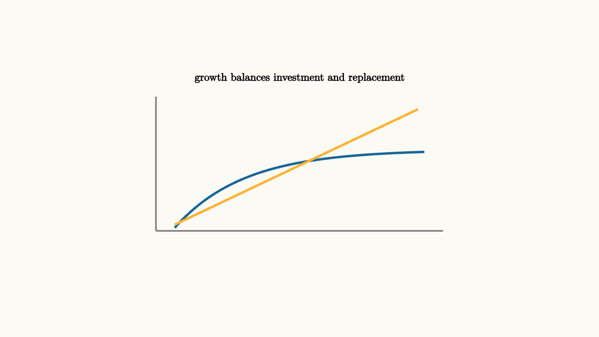

Growth Models Balance Saving And Decay
Economic growth models ask how an economy's productive capacity changes over time. A simple starting point is capital per worker, $k$. Machines, tools, buildings, and infrastructure help workers produce output, but capital wears out and must be spread across a growing population.
The model is intentionally spare. It does not try to describe every institution, invention, policy, or household choice at once. It starts with a stock, capital per worker, and asks how that stock changes. That stripped-down picture is useful because it separates building, wearing out, and dilution by population growth.
In the Solow model, output per worker is
Saving turns part of output into new capital:
Depreciation and population growth require replacement:

source
background = [0.985, 0.98, 0.955, 1]
camera = Camera(4.8b)
mesh graph = block {
. stroke{GRAY, 2} Line(start: [-2.3, -1.0, 0], end: [2.3, -1.0, 0])
. stroke{GRAY, 2} Line(start: [-2.3, -1.0, 0], end: [-2.3, 1.15, 0])
. stroke{BLUE, 3} ExplicitFunc(|x| -0.95 + 1.25 * (1 - exp(-0.9 * (x + 2.0))), [-2.0, 2.0, 120])
. stroke{ORANGE, 3} Line(start: [-2.0, -0.9, 0], end: [1.9, 0.95, 0])
. center{[0, 1.45, 0]} Text("growth balances investment and replacement", 0.62)
}
"steady state"
play Fade(0.6)The steady state occurs where
Below that point, investment exceeds replacement and capital per worker rises. Above it, replacement needs exceed investment and capital per worker falls.
The arrows in the model are intuitive. If a country has very little capital per worker, a new machine can add a lot of output, so saving can raise capital quickly. As capital per worker grows, extra machines still help, but diminishing returns make each additional unit less powerful. Meanwhile, depreciation and population growth keep demanding replacement investment.
source
param saving = 0.75
background = [0.985, 0.98, 0.955, 1]
camera = Camera(4.8b)
let Growth = |saving| block {
. stroke{GRAY, 2} Line(start: [-2.3, -1.0, 0], end: [2.3, -1.0, 0])
. stroke{BLUE, 3} ExplicitFunc(|x| -0.95 + saving * (1 - exp(-0.9 * (x + 2.0))), [-2.0, 2.0, 120])
. stroke{ORANGE, 3} Line(start: [-2.0, -0.9, 0], end: [1.9, 0.95, 0])
. center{[0, 1.45, 0]} Text("higher saving moves the investment curve", 0.62)
. center{[0, -1.45, 0]} Tex("s f(k) = (\\delta+n)k", 0.62)
}
"lower saving"
mesh g = Growth(saving: $saving)
play Fade(0.5)
"higher saving"
saving = 1.2
g = Growth(saving: $saving)
play Lerp(1.0)This model is simple, yet it separates several ideas that often get mixed together. Saving can raise the level of output per worker. Technological progress can keep growth going in the long run. Population growth changes how much investment is needed just to maintain capital per worker.
The distinction between level and growth rate is central. A higher saving rate can move the economy to a higher steady-state level of output per worker. In the basic Solow model, it does not create permanent per-worker growth by itself, because the economy eventually reaches a new balance. Sustained growth in output per worker comes from technological progress, better ideas, and improved ways of organizing production.
The model also invites policy questions. Saving more today can mean consuming less today. More population growth can require more investment just to keep capital per worker steady. Better technology can raise the whole production curve. None of those choices is only algebra, but the algebra helps organize the tradeoffs.
The lesson to keep: growth is a dynamic balance. Investment builds the stock, while depreciation and dilution pull it down, and technology changes what the stock can do.